Restoration of Original Drawings from Comic Book Covers
A character classifier that looked accurate turned out to be reading logos and barcodes rather than drawings. Building a network to strip them away.
In my last write-up on multi-label character classification, I discovered that the model precision was spurious. It wasn’t relying on drawing-related features to classify characters, things like Superman’s “S” or Aquaman’s Trident. Instead, the neural net was keying off non-drawing related entities; things like the series title, publisher logo, or price and on-sale-date inset.
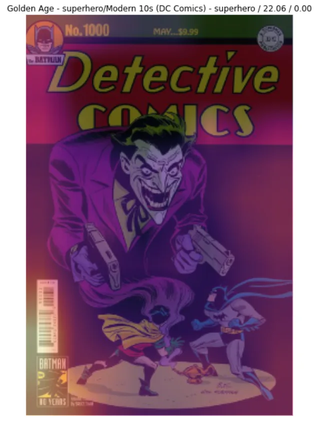
The highlighted areas in the above image show the pixels that activated to classify the image as containing Batman correctly. The model is keying off almost everything except the art!
Given the goal of this project is to create machine-generated comic book art, this is not great, but in hindsight, it is not at all surprising either. After all, logos, titles, and insets are the features that give the most information about who may appear on a cover. A lot of Detective Comics have the same headshot of Batman’s cape and cowl as an inset – and it’s always the same; pixel for pixel, cover to cover. Superman is always featured on Action Comics, and the Action Comics font type and size have been the same for decades. So these non-drawn features are more correlated with a characters’ appearance than the actual drawings of the characters.
Then how to proceed in light of this blocker? Training a machine learner to reason about and eventually create comic book covers is entirely possible. But, it will require a detour and, what may seem like, some yak shaving before I can do it.
There are three possible pivots I am considering.
When you come to a fork in the road, take it!¶
Option 1: Training the learner against a different task, something not related to the character labels. This is a small lift since the dataset, pre-processing, and compute environment is already setup. Other than engineering a new set of labels (like genre or era), the dev work amounts to little more than modifying a couple of lines of code. But since the project’s long-term goal is machine-generated comic book art, and characters are central to comic books, this feels like a lower value option.
Option 1 is a small lift with little value.
Option 2: Scraping together a new dataset is a huge lift. I already spent months compiling 112K+ images and metadata. Going back down that road feels both premature and like punishment. But the value of this option could be high if, for example, I had access to something like ComiXology data and all of the pages within an issue, not just the cover image.
Option 2 is a huge lift with huge reward.
Option 3: Removing non-drawn entities (like barcodes and insets) from the images seems like a moderate lift, although there are many unknowns. The value would be immense, though. Not only would it unlock the usefulness of the 112K+ images I already have, but it would allow me to continue practicing by learning about an approach for a task I have never trained a model to perform, e.g., image restoration.
Option 3 is a moderate lift with a huge reward.
Of these three possible ways to proceed, I want to go in the direction of the highest ROI, the one that balances size against value for each possible outcome, which appears to be option 3, removing non-drawn related entities from an image.
Photoshop Sans Humans¶
Whatever approach I take to remove non-drawn entities from a comic book cover needs to be 100% automated due to the number of images I need to process. So, what about just cropping-out these non-drawn entities by generating new images at different sizes? If the barcode always falls in the lower left or right portion of the image, then I could write a function to return a cropped image that ensures no barcode appears in any image. The only downside to cropping is that I lose pixels. If it was just the barcode, it might be the right approach. But, it’s publisher logo, series title, and random snippets of text that need to be removed, and they appear all over the image, granted, generally along the periphery. Still, I think I would need to crop over half of the pixels from an image (likely more) to remove everything. The information lost in this approach doesn’t seem worth it. But I may be onto something if I could apply proven image restoration techniques to remove these non-drawn entities without compromising pixel count.
Attempt 1: The Debarcoder¶
I like to start with a simple task first and slowly layer in complexity, instead of trying to solve the whole problem all at once. In that spirit, this research spike attempts to do one thing: remove a barcode from a comic book cover. Once an approach is demonstrated for “debarcoding” an image, it can be transferred and repurposed to remove other non-drawn entities.
Below is an example of the results of an initial debarcoder. The image on the left is the original. The image on the right is after it’s gone through the debarcoder.
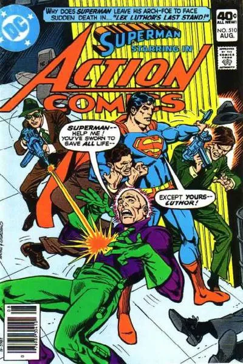
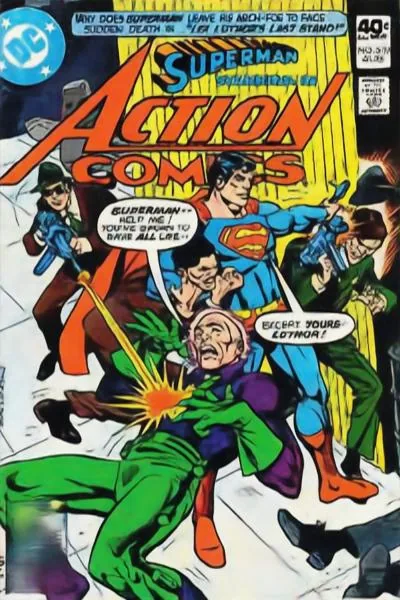
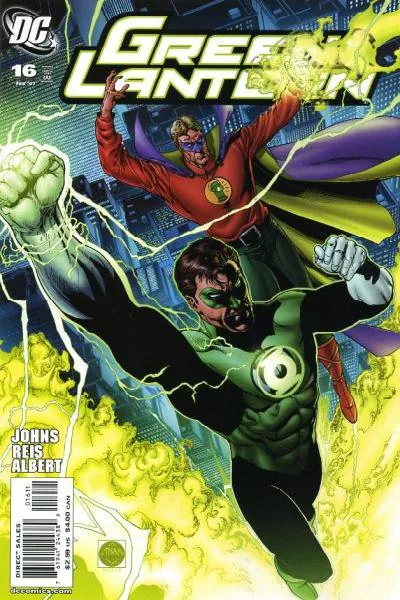
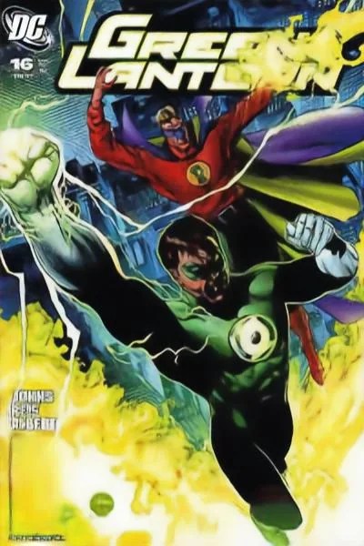
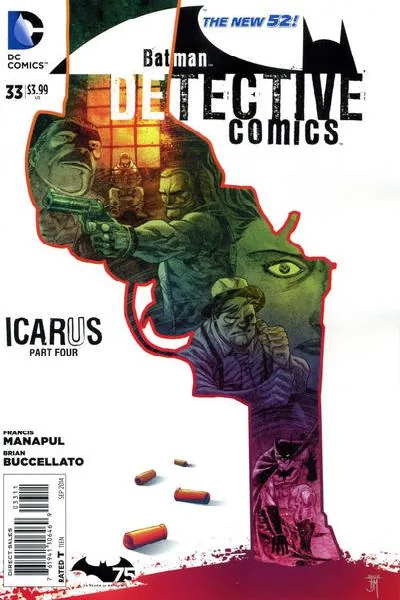
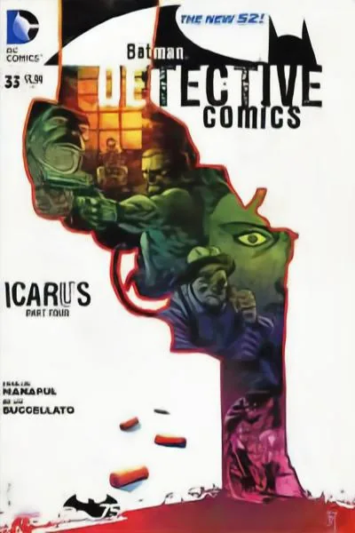
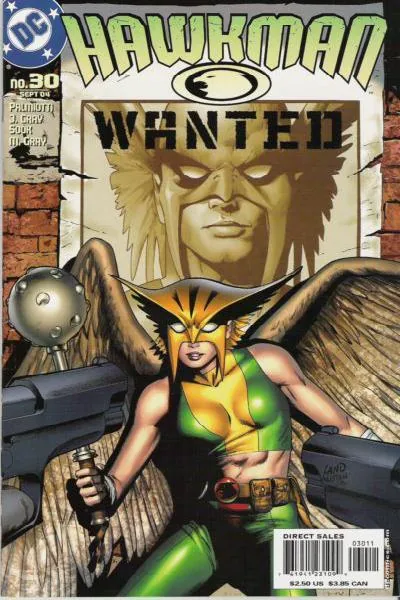
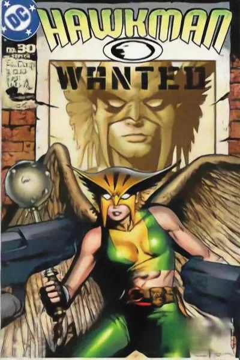
The area where the barcode used to be is consistently out of focus. Still, the color and even the general shape of what may lie beneath seems reasonable, and when the barcode is on a monochromatic background, it works particularly well. A significant level of resolution is lost in the transformation if you compare the images carefully, not only where the barcode used to be, but everything takes on a softer edge.
I’d say this is a successful proof of concept that demonstrates a potential pattern for restoring comic book covers to something like their original drawn form.
An Algorithmic Aside¶
I just want to call out that all of these images were run through the same algorithm. Nothing bespoke is occurring for any single image or set of images. It’s just one model, with one set of learned weights applied in the same way, to every image. Hence, it’s 100% automated – as was the requirement – and can be used on any image with or without a barcode, comic book, or not. However, using it on a non-comic book image wouldn’t work well, I suspect, because it was trained on comic book data. But the point is you could still do that if you wanted because it’s just a pre-determined algorithm.
The Nuts & Bolts¶
Model Definition¶
Before beginning any coding, I researched image restoration techniques and came across UNETs. The UNET is a fully convolutional (e.g., no activation layers) neural net that maps an input image to an output image through a process of, first, downsampling, then, upsampling. Unlike many other neural nets, the model’s output is not a class label or a number. It is a wholly new image.
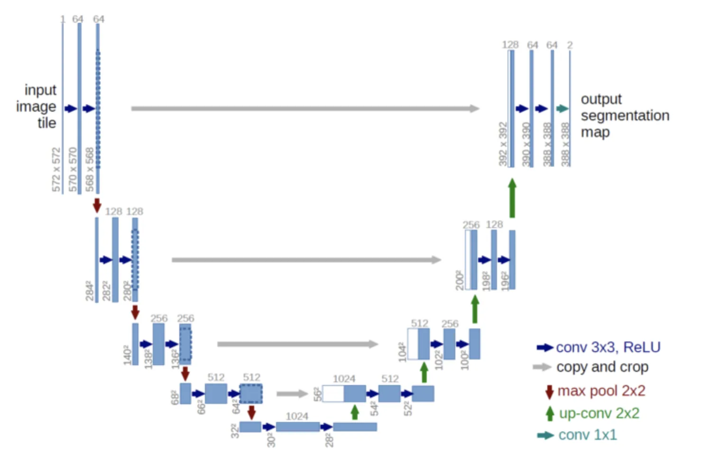
During the downsampling process, the reduction of image size occurs through consecutive convolution and max-pooling operations. As the size of the image decreases, the number of convolution channels increases, which is a typical pattern in CNN’s that helps the model understand features, or what is in an image. This feature understanding comes at the cost of locality, however, or where something in an image is.
If feature representation is learned at the expense of locality during downsampling, then the upsampling process restores location to the contracted image. The image is upsampled through a process known as transposed convolution. The general idea is that in a convolution, you map many pixels to one, so to go backward, you need to map one-pixel-to-many. The learnable parameters work to find the most workable solution or combination of pixels because there are many possible solutions in the inverse operation (the one-to-many).
The Dataset¶
The approach I used was to train a UNET to go from an input image that contains barcodes, to an output image without barcodes. I had to do some data augmentation since I didn’t have two datasets configured like this, so first, I cropped the barcode out of all images by removing the bottom part of the picture. Since most barcodes sit in the lower lefthand or righthand portion of the image, this was a straightforward operation. I then screen-capped two-dozen barcodes from random covers. Then I wrote a function to augment the cropped images by randomly pasting arbitrary barcodes with random rotation over the image, as shown below.
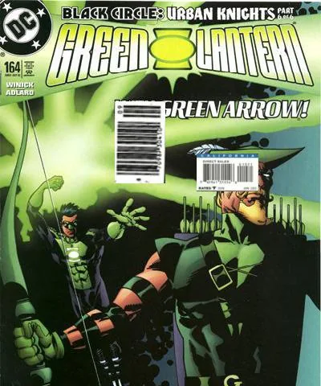
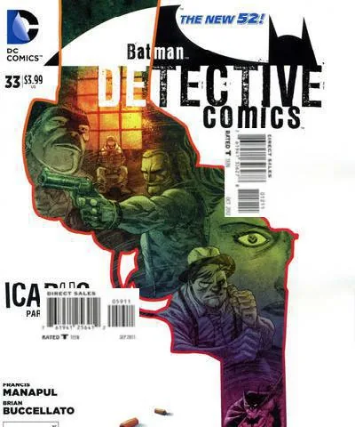
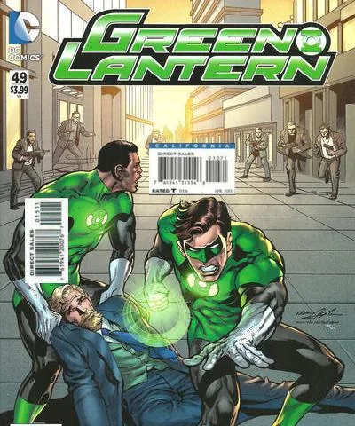
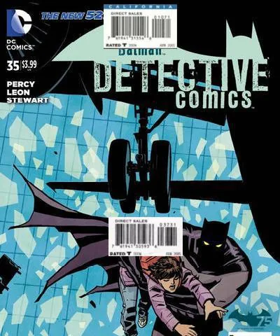
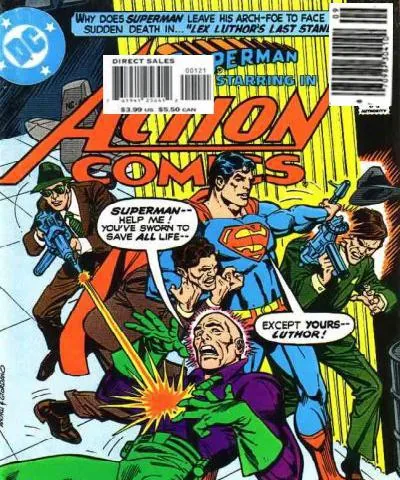
Model Training¶
I used fastai to load a UNET model quickly. There are times when fastai is so good at what it does; it feels like cheating. Still, because the goal is to demonstrate the feasibility of an approach and develop the intuition of model choice and hyperparameters, for a first pass, this is OK. However, moving forward, it’s a strong consideration to inspect, tweak, and experiment with the UNET provided in the fastai library and better customize it toward this particular task.
Due to memory constraints, images were resized to 200 x 300, and a batch size of 32 was used. I set the learning rate based on fastai’s handy learning rate finder and trained the model for ten epochs.
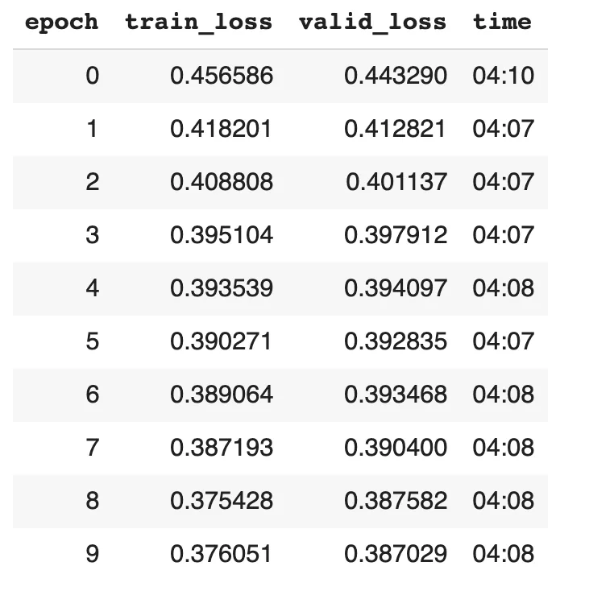
Excellent! It’s definitely learning something! I then trained the model for five more epochs with a lower learning rate.
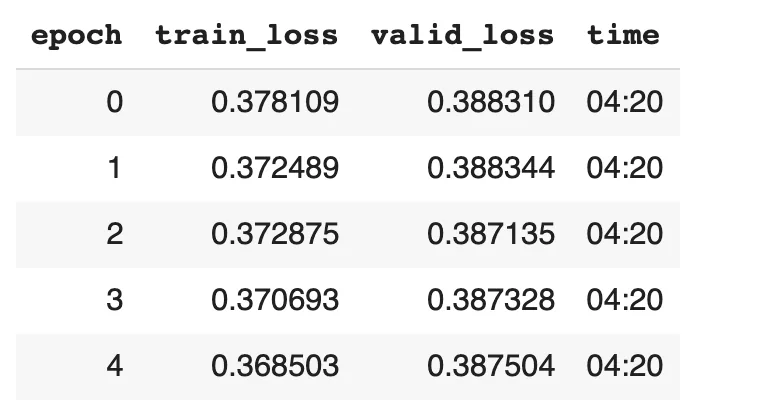
This looks about as good as it’s going to get. Here’s an example of what the model learned, comparing the input to both the predicted and actual images.
Input / Prediction / Actual¶
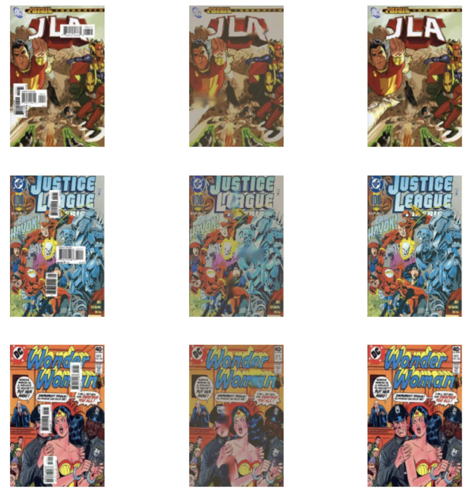
Comparing the prediction to actual, the model is doing OK. It looks like somebody spilled water on an ink drawing and blotted it up, but the task we are performing would be tricky even for a human to perform. Artistic ability aside, if a person gave you a comic book cover with barcodes randomly pasted over it, depending on where the barcodes fall, anybody would struggle to recreate what’s underneath entirely. And this is represented in the model pretty well. When the barcode falls on a monochromatic background, it does just fine. Even if the barcode falls across a straight line, it does an OK job stitching it back together. But if it happens to fall on a person’s face, like in the Wonder Woman image above, the best it can do is return a skin-colored blob. From an optimization standpoint, this is ideal, though. How would anybody ever know what kind of face is underneath the barcode without peeking? The look could be smiling, angry, or have any combination of eyes, nose, mouth, and facial hair.
Now, notice that the prediction image is discolored! Not only that, but it’s also been downsampled to a resolution of 200 x 300 (which was a choice I made). So the barcode has been replaced with a smudge, and the image is now blurry and discolored. Not ideal, but that’s OK, I can just train another model to fix it!
The High-Reser¶
In the last section, I kind of successfully trained a model to remove barcodes from comic book covers. Still, the output of the model is in a lower resolution and discolored. Next, I will train a model to upsample this image back up to 400 x 600 and recolor it. I can use a similar UNET architecture.
Due to the upsampled image size, I could only train with a batch size of 1 on my hardware configuration; this is Stochastic Gradient Descent (SGD). In this setting, the model weights are updated once for every image in the dataset. Each image is selected at random; hence, it is stochastic. The only thing, SGD is noisy because the weights are updated for each image. While this can help move the model loss function out of local minimums, it can also prevent it from converging to a global minimum; just something to keep in mind while training a model under such a configuration.
Here’s an example of the training data. We want to go from the image on the right, a 200 x 300 discolored image, to the image on the left, a 400 x 600 accurately colored image.
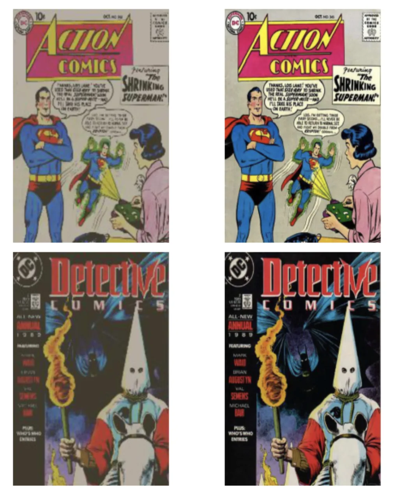
I trained it for 10 epochs initially, using Stochastic Gradient Descent, and it’s definitely learning something.
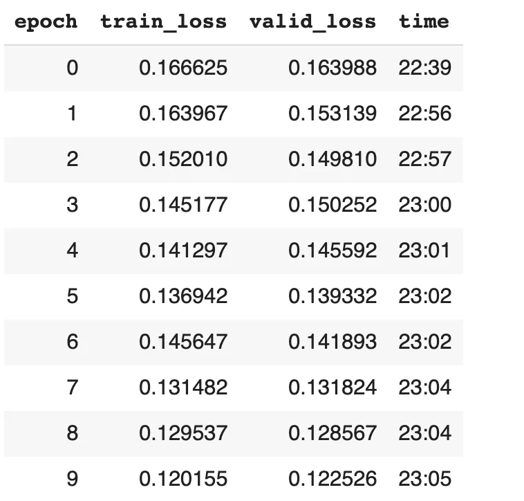
Inspecting the input image to both the predicted and actual images shows promise! The color looks much better. The lines are not perfect, and we won’t be able to recover some fine detail, but it’s much better than what came out of the debarcoder.
Input / Prediction / Actual¶
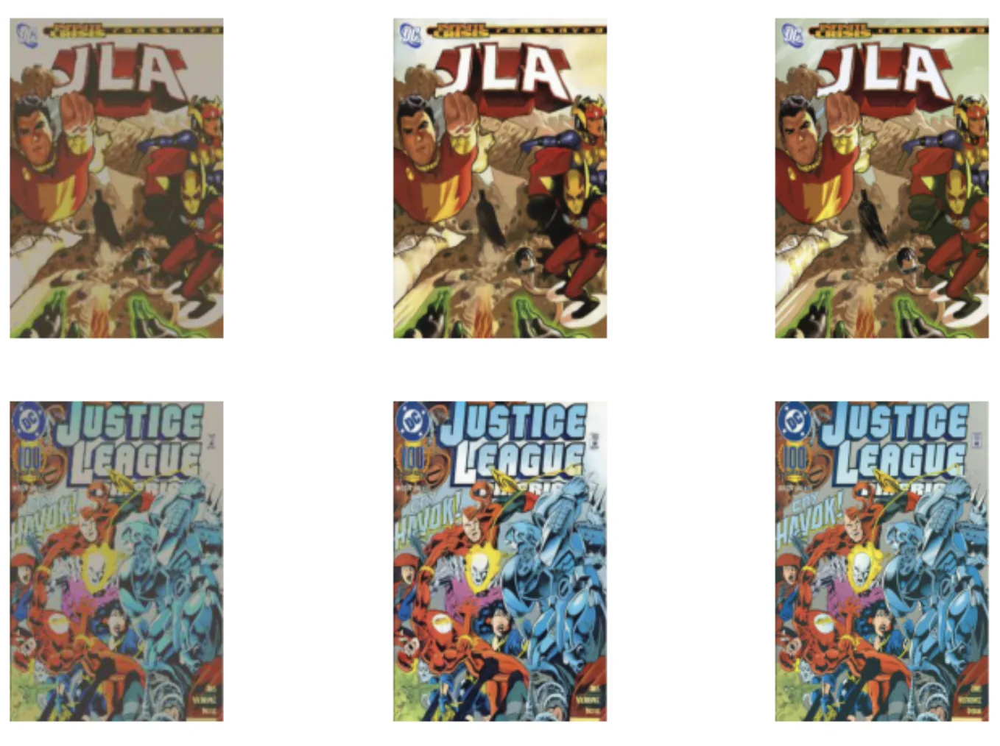
Model Evaluation¶
This kind of research is challenging to evaluate. Looking at the loss metrics relative to pixel-level accuracy isn’t super helpful – mainly because there is no baseline. A cursory overview from a subject matter expert is probably the best I can do at this time until I have a baseline. But because this is a model that will feed into other models, I may be able to measure the success of it relative to the boost provided to downstream models that are more straightforward to evaluate. For the time being, though, there isn’t a great way to assess how well this machine learner is removing barcodes other than by eyeballing it.
Next Steps!¶
- Develop a pattern to remove all entities from a cover.
- Finetune the high-reser to be even better.